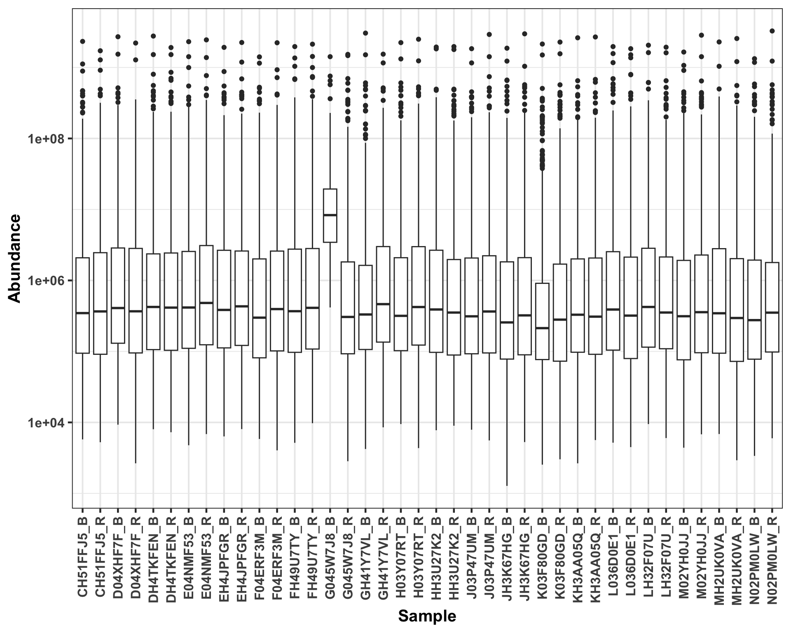
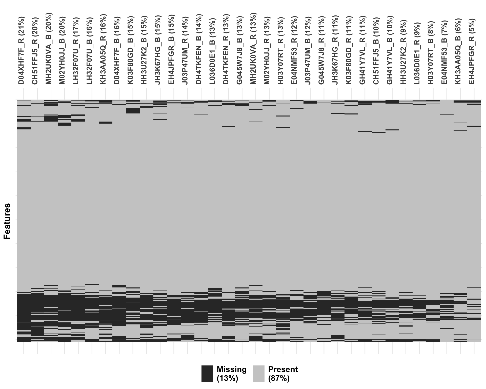
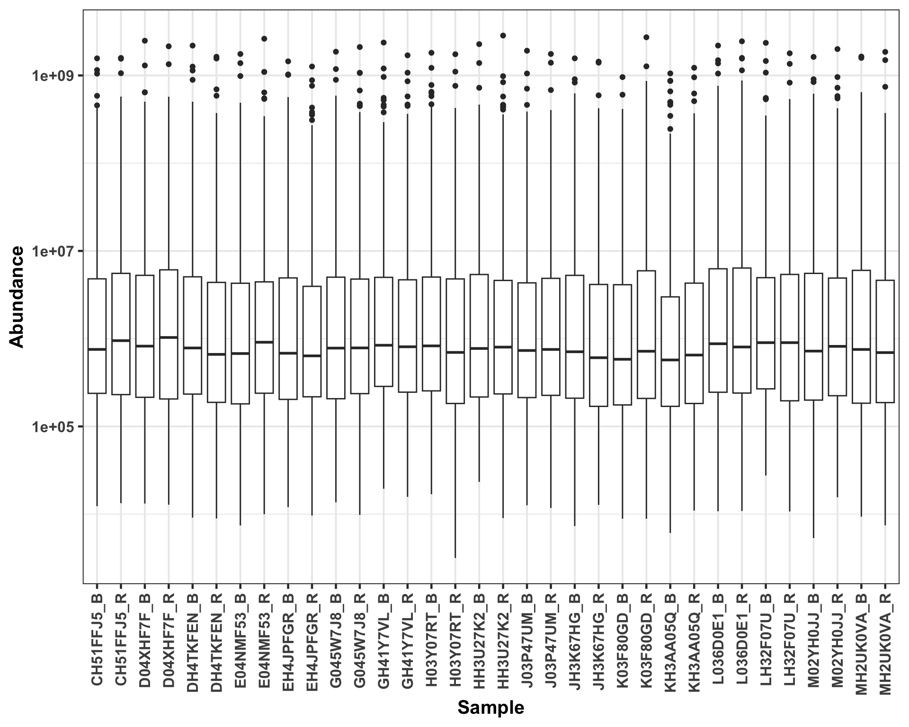
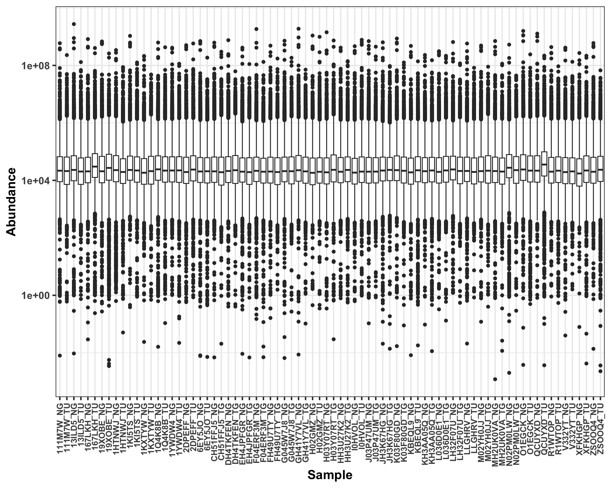
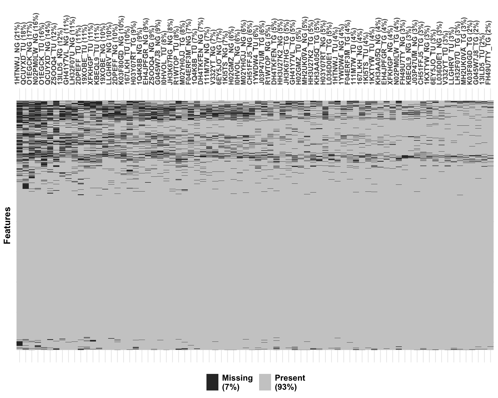

Preprocessing: DIA Proteomics of Method Development cohort
Qian-Wu Liao
Last updated: 2024-05-15
Checks: 6 1
Knit directory: SMART-CARE_LungCancer/
This reproducible R Markdown analysis was created with workflowr (version 1.7.1). The Checks tab describes the reproducibility checks that were applied when the results were created. The Past versions tab lists the development history.
Great! Since the R Markdown file has been committed to the Git repository, you know the exact version of the code that produced these results.
Great job! The global environment was empty. Objects defined in the global environment can affect the analysis in your R Markdown file in unknown ways. For reproduciblity it’s best to always run the code in an empty environment.
The command set.seed(20230425) was run prior to running
the code in the R Markdown file. Setting a seed ensures that any results
that rely on randomness, e.g. subsampling or permutations, are
reproducible.
Great job! Recording the operating system, R version, and package versions is critical for reproducibility.
Nice! There were no cached chunks for this analysis, so you can be confident that you successfully produced the results during this run.
Using absolute paths to the files within your workflowr project makes it difficult for you and others to run your code on a different machine. Change the absolute path(s) below to the suggested relative path(s) to make your code more reproducible.
| absolute | relative |
|---|---|
| /Users/qianwu/Desktop/SMART-CARE_LungCancer | . |
Great! You are using Git for version control. Tracking code development and connecting the code version to the results is critical for reproducibility.
The results in this page were generated with repository version 9a5191e. See the Past versions tab to see a history of the changes made to the R Markdown and HTML files.
Note that you need to be careful to ensure that all relevant files for
the analysis have been committed to Git prior to generating the results
(you can use wflow_publish or
wflow_git_commit). workflowr only checks the R Markdown
file, but you know if there are other scripts or data files that it
depends on. Below is the status of the Git repository when the results
were generated:
Ignored files:
Ignored: .DS_Store
Ignored: .RData
Ignored: .Rhistory
Ignored: analysis/.DS_Store
Ignored: code/.DS_Store
Ignored: data/.DS_Store
Ignored: output/.DS_Store
Untracked files:
Untracked: analysis/CrossCohort_investigation_EXP.Rmd
Untracked: code/archive/
Untracked: code/comparison_funcs.R
Untracked: code/dataset_list.R
Untracked: code/workflowr_commands.R
Untracked: data/Discovery/
Untracked: data/MethodDev/
Untracked: data/aliquot_metadata.xlsx
Untracked: data/patient_metadata.xlsx
Untracked: data/sample_metadata.xlsx
Untracked: output/Discovery/
Untracked: output/MethodDev/
Untracked: output/SC_meeting/
Note that any generated files, e.g. HTML, png, CSS, etc., are not included in this status report because it is ok for generated content to have uncommitted changes.
These are the previous versions of the repository in which changes were
made to the R Markdown
(analysis/MethodDev_01_preprocessing_DIA.Rmd) and HTML
(docs/MethodDev_01_preprocessing_DIA.html) files. If you’ve
configured a remote Git repository (see ?wflow_git_remote),
click on the hyperlinks in the table below to view the files as they
were in that past version.
| File | Version | Author | Date | Message |
|---|---|---|---|---|
| Rmd | b83f673 | LiaoQianWu | 2024-05-15 | Just for quick update of analysis report webpage |
| Rmd | df818f2 | LiaoQianWu | 2024-04-21 | Redo investigation of impacts of sample missing levels on data and retrain MOFA models using only common samples |
| Rmd | fddf694 | LiaoQianWu | 2024-04-04 | Redo investigation of association between data missingness and processed data using PCA, instead of PPCA, and improve some parts in untargeted lipidomics analysis |
| Rmd | 5c2e33e | LiaoQianWu | 2024-03-22 | Fix patient recurrence metadata and check associations between DIA proteomics and sample median expressions and missing levels |
| Rmd | 75eb254 | LiaoQianWu | 2024-03-18 | Correct sample time points and conditions in metadata |
| html | 8f6fa90 | LiaoQianWu | 2023-12-19 | Build site. |
| Rmd | 4e9331f | LiaoQianWu | 2023-12-12 | Combine discovery and method development data and do batch correction |
| html | d71a18f | LiaoQianWu | 2023-12-06 | Build site. |
| Rmd | e9ae795 | LiaoQianWu | 2023-12-05 | Update metadata |
| Rmd | bba1011 | LiaoQianWu | 2023-11-17 | Rearrange file locations and redo preprocessing of all method development datasets |
Description: Preprocess Tissue and Plasma DIA Proteomics generated by Karim Aljakouch from AG Krijgsveld and Tissue DIA Proteomics from AG Klingmüller, including data cleansing, filtering, and normalization (VSN). All needed information was then stored in SummarizedExperiment objects for further analyses. Note that there are two Tissue and two Plasma DIA Proteomics generated by AG Krijgsveld, and concentration is suggested on new ones owing to some technical problems and missing samples with old ones.
Load libraries
library('readr')
library('readxl')
library('vsn')
library('visdat')
library('ggrepel')
library('SummarizedExperiment')
library('tidyverse')
# Load user-defined functions
source('./code/analysis_pipeline.R')
source('./code/misc.R')
# Set plot theme
th <- theme_bw(base_size = 15) +
theme(axis.title = element_text(face = 'bold'),
axis.text = element_text(face = 'bold'),
axis.ticks = element_line(linewidth = 0.8),
legend.text = element_text(size = 15))# Load sample metadata
smpMetadat <- readxl::read_excel('./data/sample_metadata.xlsx')
colnames(smpMetadat) <- smpMetadat[3,, drop = F]
smpMetadat <- dplyr::slice(smpMetadat, -c(1:3)) %>%
dplyr::select(c(Code, Parents, Visit, `Material submitted`, `Date and time of collection or surgery`,
`SMART-CARE cohort identifier`)) %>%
dplyr::rename(Sample = Code, Patient = Parents, TimePoint = Visit, SmpType = `Material submitted`,
Date = `Date and time of collection or surgery`, Cohort = `SMART-CARE cohort identifier`) %>%
dplyr::mutate(Sample = stringr::str_remove_all(Sample, '^SC_T_S_|^SC_DIS_S_|^SC_S_|_P'),
Patient = stringr::str_remove(Patient, '^/THRX_SPACE/THRX_DB/'),
TimePoint = dplyr::case_when(TimePoint == 'PRETHERAPEUTIC' ~ 'Baseline',
TimePoint == 'FOLLOW-UP' ~ 'Follow-up',
TimePoint == 'RECURRENCE' ~ 'Recurrence'),
SmpType = dplyr::case_when(SmpType == 'EDTA_PLASMA' ~ 'Plasma',
SmpType == 'FRESH_FROZEN_TISSUE' ~ 'Tissue'),
Condition = dplyr::case_when(grepl('_TU|_TG', Sample) ~ 'Tumor',
grepl('_NG', Sample) ~ 'Normal',
!grepl('_TU|_TG|_NG', Sample) ~ TimePoint),
TimePoint = dplyr::case_when(TimePoint %in% 'Recurrence' ~ 'Follow-up',
!TimePoint %in% 'Recurrence' ~ TimePoint),
Date = stringr::str_extract(Date, '^\\d+-\\d+-\\d+'),
Cohort = dplyr::case_when(Cohort == 'DISCOVERY_COHORT' ~ 'Discovery',
Cohort == 'METHOD_DEVELOPMENT_COHORT' ~ 'MethodDev'),
Date = as.Date(Date, format = '%Y-%m-%d'))
# Load patient metadata
patientMetadat <- readxl::read_excel('./data/patient_metadata.xlsx')
colnames(patientMetadat) <- patientMetadat[3,, drop = F]
patientMetadat <- dplyr::slice(patientMetadat, -c(1:3)) %>%
dplyr::select(c(Code, Gender, `Age at diagnosis`, `Pathological stage`, `Smoking status`,
`Adjuvant chemotherapy`,)) %>%
dplyr::rename(Patient = Code, Age = `Age at diagnosis`, Stage = `Pathological stage`,
Smoking = `Smoking status`, Adjuvant = `Adjuvant chemotherapy`) %>%
dplyr::mutate(Gender = dplyr::case_when(Gender == 'MALE' ~ 'Male',
Gender == 'FEMALE' ~ 'Female'),
Smoking = dplyr::case_when(Smoking == 'SMOKER' ~ 'Smoker',
Smoking == 'EX-SMOKER' ~ 'Ex-smoker',
Smoking == 'NON-SMOKER' ~ 'Non-smoker'),
Adjuvant = dplyr::case_when(Adjuvant == 'true' ~ 'True',
Adjuvant == 'false' ~ 'False'),
Age = as.numeric(Age))
# Include patient recurrence information in patient metadata
recurPats <- dplyr::filter(smpMetadat, Condition == 'Recurrence') %>%
dplyr::pull(Patient)
patientMetadat <- dplyr::mutate(patientMetadat, Recurrence = dplyr::case_when(Patient %in% recurPats ~ 'Yes',
!Patient %in% recurPats ~ 'No'))
# Load aliquot metadata
aliquotMetadat <- readxl::read_excel('./data/aliquot_metadata.xlsx')
colnames(aliquotMetadat) <- aliquotMetadat[3,, drop = F]
aliquotMetadat <- dplyr::slice(aliquotMetadat, -c(1:3)) %>%
dplyr::select(Code, Parents, `Tumor Cell Content (%)`, `Cohort Identifier`, `Submission to`,
`Delivered?`) %>%
dplyr::rename(Aliquot = Code, Sample = Parents, TumorPurity = `Tumor Cell Content (%)`,
Cohort = `Cohort Identifier`, To = `Submission to`, Delivered = `Delivered?`) %>%
dplyr::mutate(Sample = stringr::str_remove_all(Sample, '^/THRX_SPACE/THRX_DB/SC_T_S_|_P'),
Sample = stringr::str_remove(Sample, '^/THRX_SPACE/THRX_DB/SC_DIS_S_'),
Sample = stringr::str_remove(Sample, '^/THRX_SPACE/THRX_DB/SC_S_'),
Sample = stringr::str_remove(Sample, '^/THRX_SPACE/THRX_DB/SC_DIS_'),
Cohort = dplyr::case_when(Cohort == 'method establishment' ~ 'MethodDev',
Cohort == 'DISCOVERY_COHORT' ~ 'Discovery'),
TumorPurity = as.numeric(TumorPurity)) %>%
dplyr::filter(To %in% c('KRIJGSVELD', 'KLINGMUELLER'))
# Prepare aliquot metadata containing tumor purity information
tumorPurityInfo <- dplyr::select(aliquotMetadat, Aliquot, Sample, TumorPurity)
# Combine all needed metadata
summMetadat <- dplyr::left_join(tumorPurityInfo, smpMetadat, by = 'Sample') %>%
dplyr::left_join(patientMetadat, by = 'Patient')
# List sample annotations to keep in SE objects
smpAnno <- c('Patient', 'SmpType', 'TimePoint', 'Date', 'Cohort', 'Condition',
'Recurrence', 'Gender', 'Age', 'Smoking', 'Stage', 'Adjuvant')Tissue Proteomics (AG Krijgsveld)
New
Old DIA Tissue Proteomics generated by AG Krijgsveld appears not to have good quality because sample conditions are not major variance in data, i.e., Tumor and Normal samples are not nicely separated. Check visualization down below in ‘Old’ part
# Load and tidy up unpreprocessed data and include summarized metadata into it
new_proTissueTab <- readr::read_delim('./data/MethodDev/AG_Krijgsveld/20230726_Thorax_Method_Est_tissue.txt') %>%
dplyr::select(-c(Protein.Ids, First.Protein.Description)) %>%
tidyr::pivot_longer(cols = -c('Protein.Group', 'Protein.Names', 'Genes'),
names_to = 'Aliquot',
values_to = 'Abundance') %>%
dplyr::mutate(Protein.Names = stringr::str_remove_all(Protein.Names, '_HUMAN'),
Aliquot = stringr::str_remove_all(Aliquot, '\\.raw$')) %>%
dplyr::left_join(summMetadat, by = 'Aliquot')Show dimensions of original data (40 samples and 7537 features)
# Preprocess data
new_proTissue <- doPreprocessing(new_proTissueTab, feat = 'Protein.Group', smp = 'Sample',
val = 'Abundance', featAnno = c('Protein.Names', 'Genes'),
smpAnno = c(smpAnno, 'TumorPurity'), do_featFilt = T,
cutoff = 0.5, viz_miss = T)#, save_path = './data/MethodDev/AG_Krijgsveld/new_proTissue')
dim(new_proTissue$ori.data)[1] 7537 40Show missingness of original data
new_proTissue$ori.data.miss
| Version | Author | Date |
|---|---|---|
| d71a18f | LiaoQianWu | 2023-12-06 |
Show distribution of original data
new_proTissue$ori.data.dist
| Version | Author | Date |
|---|---|---|
| d71a18f | LiaoQianWu | 2023-12-06 |
Remove features quantified in less than 1/2 of
samples
Show dimensions of filtered data (40 samples and 6614 features)
dim(new_proTissue$filt.data)[1] 6614 40Show missingness of filtered data
new_proTissue$filt.data.miss
| Version | Author | Date |
|---|---|---|
| d71a18f | LiaoQianWu | 2023-12-06 |
Normalize filtered data by VSN
Show distribution of vsn normalized data
new_proTissue$vsn.data.dist
| Version | Author | Date |
|---|---|---|
| d71a18f | LiaoQianWu | 2023-12-06 |
Show feature mean-variance relationship of vsn normalized data
new_proTissue$vsn.feat.mean.var
| Version | Author | Date |
|---|---|---|
| d71a18f | LiaoQianWu | 2023-12-06 |
Do metadata-assisted quality control
PC1 significantly separates Tumor and Normal samples, which implies fine
data quality.
# Do single-omics analysis
new_proTissueSOA <- doSOA(new_proTissue$vsn.data, meta_var = 'Condition', pca_method = 'ppca',
do_onlyPCA = T)
pcTab <- new_proTissueSOA$pcTab
ggplot(pcTab, aes(x=Condition, y=`PC1 (24.2%)`, col=Condition, fill=Condition)) +
geom_boxplot(alpha = 0.7, outlier.shape = NA) +
geom_jitter(position = position_jitter(0.3), size = 3, show.legend = F) +
scale_color_brewer(palette = 'Dark2') +
scale_fill_brewer(palette = 'Dark2') +
labs(x = 'Sample condition') +
th
| Version | Author | Date |
|---|---|---|
| d71a18f | LiaoQianWu | 2023-12-06 |
Investigate impacts of sample missing levels on observed
features
Display relationship between sample missing levels and median
expressions computed by fully observed features
# Normalize unfiltered data
proTissueUnfiltVsn <- doPreprocessing(new_proTissueTab, feat = 'Protein.Group', smp = 'Sample',
val = 'Abundance', featAnno = c('Protein.Names', 'Genes'),
smpAnno = c(smpAnno, 'TumorPurity'), do_featFilt = F)$vsn.data
# Prepare long data for computing sample missing levels and median expressions
proTissueUnfiltVsnTab <- summExp2df(proTissueUnfiltVsn, assay = 'Abundance',
row_id = 'Protein.Group', col_id = 'Sample') %>%
# Prepare information of sample missing levels
dplyr::group_by(Sample) %>%
dplyr::mutate(OriMissLevel = sum(is.na(Value)) / length(Value)) %>%
dplyr::ungroup() %>%
# Prepare information of sample median expressions computed by fully observed features
dplyr::group_by(Protein.Group) %>%
dplyr::mutate(Keep = dplyr::case_when(!any(is.na(Value)) ~ 'Yes',
any(is.na(Value)) ~ 'No')) %>%
dplyr::ungroup() %>%
dplyr::filter(Keep %in% 'Yes') %>%
dplyr::group_by(Sample) %>%
dplyr::mutate(MedianVsnAbun = median(Value)) %>%
dplyr::ungroup()
# Create SE object containing information of sample missing levels and median expressions
colAnno <- dplyr::select(proTissueUnfiltVsnTab, Sample, OriMissLevel, MedianVsnAbun) %>%
dplyr::filter(!duplicated(Sample)) %>%
tibble::column_to_rownames('Sample')
proTissueUnfiltVsn <- SummarizedExperiment(assays = list(Abundance = assay(proTissueUnfiltVsn)),
colData = colAnno)
# Visualize relationship between sample missing levels and median expressions
ggplot(proTissueUnfiltVsnTab, aes(x=OriMissLevel, y=MedianVsnAbun)) +
geom_point(size = 3.5) +
ggpubr::stat_cor(aes(label=after_stat(r.label)), method = 'pearson', size = 6) +
labs(x = 'Missing level', y = 'Median expression') +
thShow significant associations between data and sample missing levels
# Do PCA
pcaRes <- doSOA(proTissueUnfiltVsn, meta_var = 'OriMissLevel', pca_method = 'pca',
num_PCs = 20, do_onlyPCA = T)
# Show significant associations between PCs and sample missing levels
pcaRes$pcSigAssoRes %>%
dplyr::filter(grepl('PC[1-9] \\(', Var1)) Var1 Var2 pVal pValAdj Stat Test
1 PC1 (45.8%) OriMissLevel 0.00066 0.0264 -0.516 Correlation
2 PC7 (2.8%) OriMissLevel 0.00235 0.0471 0.467 Correlation
3 PC3 (5.9%) OriMissLevel 0.00413 0.0551 0.444 Correlation# Visualize relationship between PCs and sample missing levels
pcTab <- pcaRes$pcTab
ggplot(pcTab, aes(x=`PC1 (45.8%)`, y=OriMissLevel)) +
geom_point(size = 3.5) +
ggpubr::stat_cor(aes(label=after_stat(r.label)), method = 'pearson', size = 6) +
labs(y = 'Missing level') +
thOld
Q: Samples from Patient ‘P3457YLC’, ‘93417JCT’, and ‘G33TNUQD’ are missing? A: They were dropped out from study.
# Load and tidy up unpreprocessed data and include summarized metadata into it
proTissueTab <- readr::read_tsv('./data/MethodDev/AG_Krijgsveld/20230104_MarcS_Method_Estab_Tissue.pg_matrix.tsv') %>%
dplyr::select(-c(Protein.Ids, First.Protein.Description)) %>%
tidyr::pivot_longer(cols = -c('Protein.Group', 'Protein.Names', 'Genes'),
names_to = 'Aliquot',
values_to = 'Abundance') %>%
dplyr::mutate(Protein.Names = stringr::str_remove_all(Protein.Names, '_HUMAN'),
Aliquot = stringr::str_remove_all(Aliquot, 'D:.*oecf4.*Exploris_|\\.raw')) %>%
dplyr::left_join(summMetadat, by = 'Aliquot')
# Preprocess data
proTissue <- doPreprocessing(proTissueTab, feat = 'Protein.Group', smp = 'Sample',
val = 'Abundance', featAnno = c('Protein.Names', 'Genes'),
smpAnno = c(smpAnno, 'TumorPurity'), do_featFilt = T,
cutoff = 0.5, viz_miss = T)Show dimensions of normalized filtered data (34 samples and 5746 features)
dim(proTissue$vsn.data)[1] 5746 34Do metadata-assisted quality control
Visualize significant PCs associated with sample conditions
# Do single-omics analysis
proTissueSOA <- doSOA(proTissue$vsn.data, meta_var = 'Condition', pca_method = 'ppca',
do_onlyPCA = T)
proTissueSOA$pcSigAssoRes Var1 Var2 pVal pValAdj Stat Test
1 PC19 (1.6%) Condition 0.0112 0.208 -2.69 T-test
2 PC6 (5.2%) Condition 0.0208 0.208 2.43 T-testpcTab <- proTissueSOA$pcTab
ggplot(pcTab, aes(x=Condition, y=`PC19 (1.6%)`, col=Condition, fill=Condition)) +
geom_boxplot(alpha = 0.7, outlier.shape = NA) +
geom_jitter(position = position_jitter(0.3), size = 3, show.legend = F) +
scale_color_brewer(palette = 'Dark2') +
scale_fill_brewer(palette = 'Dark2') +
labs(x = 'Sample condition') +
thggplot(pcTab, aes(x=Condition, y=`PC6 (5.2%)`, col=Condition, fill=Condition)) +
geom_boxplot(alpha = 0.7, outlier.shape = NA) +
geom_jitter(position = position_jitter(0.3), size = 3, show.legend = F) +
scale_color_brewer(palette = 'Dark2') +
scale_fill_brewer(palette = 'Dark2') +
labs(x = 'Sample condition') +
thPlasma Proteomics (AG Krijgsveld)
New
# Load unpreprocessed data
new_proPlasmaTab <- readr::read_delim('./data/MethodDev/AG_Krijgsveld/20230726_Thorax_Method_Est_plasma.txt') %>%
dplyr::select(-c(Protein.Ids, First.Protein.Description)) %>%
tidyr::pivot_longer(cols = -c('Protein.Group', 'Protein.Names', 'Genes'),
names_to = 'Aliquot',
values_to = 'Abundance') %>%
dplyr::mutate(Protein.Names = stringr::str_remove_all(Protein.Names, '_HUMAN'),
Aliquot = stringr::str_remove_all(Aliquot, '\\.raw$')) %>%
dplyr::left_join(summMetadat, by = 'Aliquot')Show dimensions of original data (40 samples and 1097 features)
# Preprocess data
new_proPlasma <- doPreprocessing(new_proPlasmaTab, feat = 'Protein.Group', smp = 'Sample',
val = 'Abundance', featAnno = c('Protein.Names', 'Genes'),
smpAnno = smpAnno, do_featFilt = T, cutoff = 0.5,
viz_miss = T, bins = 30)#, save_path = './data/MethodDev/AG_Krijgsveld/new_proPlasma')
dim(new_proPlasma$ori.data)[1] 1097 40Show missingness of original data
new_proPlasma$ori.data.missShow distribution of original data
new_proPlasma$ori.data.dist
| Version | Author | Date |
|---|---|---|
| d71a18f | LiaoQianWu | 2023-12-06 |
Remove features quantified in less than 1/2 of
samples
Show dimensions of filtered data (40 samples and 640 features)
dim(new_proPlasma$filt.data)[1] 640 40Show missingness of filtered data
new_proPlasma$filt.data.miss
| Version | Author | Date |
|---|---|---|
| d71a18f | LiaoQianWu | 2023-12-06 |
Normalize filtered data by VSN
Show distribution of vsn normalized data
new_proPlasma$vsn.data.distShow feature mean-variance relationship of vsn normalized data
new_proPlasma$vsn.feat.mean.varInvestigate impacts of sample missing levels on observed
features
Display relationship between sample missing levels and median
expressions computed by fully observed features
# Normalize unfiltered data
proPlasmaUnfiltVsn <- doPreprocessing(new_proPlasmaTab, feat = 'Protein.Group', smp = 'Sample',
val = 'Abundance', featAnno = c('Protein.Names', 'Genes'),
smpAnno = smpAnno, do_featFilt = F)$vsn.data
# Prepare long data for computing sample missing levels and median expressions
proPlasmaUnfiltVsnTab <- summExp2df(proPlasmaUnfiltVsn, assay = 'Abundance',
row_id = 'Protein.Group', col_id = 'Sample') %>%
# Prepare information of sample missing levels
dplyr::group_by(Sample) %>%
dplyr::mutate(OriMissLevel = sum(is.na(Value)) / length(Value)) %>%
dplyr::ungroup() %>%
# Prepare information of sample median expressions computed by fully observed features
dplyr::group_by(Protein.Group) %>%
dplyr::mutate(Keep = dplyr::case_when(!any(is.na(Value)) ~ 'Yes',
any(is.na(Value)) ~ 'No')) %>%
dplyr::ungroup() %>%
dplyr::filter(Keep %in% 'Yes') %>%
dplyr::group_by(Sample) %>%
dplyr::mutate(MedianVsnAbun = median(Value)) %>%
dplyr::ungroup()
# Create SE object containing information of sample missing levels and median expressions
colAnno <- dplyr::select(proPlasmaUnfiltVsnTab, Sample, OriMissLevel, MedianVsnAbun) %>%
dplyr::filter(!duplicated(Sample)) %>%
tibble::column_to_rownames('Sample')
proPlasmaUnfiltVsn <- SummarizedExperiment(assays = list(Abundance = assay(proPlasmaUnfiltVsn)),
colData = colAnno)
# Visualize relationship between sample missing levels and median expressions
ggplot(proPlasmaUnfiltVsnTab, aes(x=OriMissLevel, y=MedianVsnAbun)) +
geom_point(size = 3.5) +
ggpubr::stat_cor(aes(label=after_stat(r.label)), method = 'pearson', size = 6) +
labs(x = 'Missing level', y = 'Median expression') +
th
| Version | Author | Date |
|---|---|---|
| d71a18f | LiaoQianWu | 2023-12-06 |
Show significant associations between data and sample missing levels
# Do PCA
pcaRes <- doSOA(proPlasmaUnfiltVsn, meta_var = 'OriMissLevel', pca_method = 'pca',
num_PCs = 20, do_onlyPCA = T)
# Show significant associations between PCs and sample missing levels
pcaRes$pcSigAssoRes %>%
dplyr::filter(grepl('PC[1-9] \\(', Var1)) Var1 Var2 pVal pValAdj Stat Test
1 PC2 (13.6%) OriMissLevel 7.13e-06 0.000285 0.645 Correlation
2 PC6 (3.6%) OriMissLevel 6.88e-04 0.013800 -0.514 Correlation# Visualize relationship between PCs and sample missing levels
pcTab <- pcaRes$pcTab
ggplot(pcTab, aes(x=`PC2 (13.6%)`, y=OriMissLevel)) +
geom_point(size = 3.5) +
ggpubr::stat_cor(aes(label=after_stat(r.label)), method = 'pearson', size = 6) +
labs(y = 'Missing level') +
th
| Version | Author | Date |
|---|---|---|
| d71a18f | LiaoQianWu | 2023-12-06 |
Old
Samples from Patient ‘P3457YLC’, ‘93417JCT’, and ‘G33TNUQD’ are missing.
# Load and tidy up unpreprocessed data and include summarized metadata into it
proPlasmaTab <- readr::read_tsv('./data/MethodDev/AG_Krijgsveld/20230104_MarcS_Method_Estab_Plasma.pg_matrix.tsv') %>%
dplyr::select(-c(Protein.Ids, First.Protein.Description)) %>%
tidyr::pivot_longer(cols = -c('Protein.Group', 'Protein.Names', 'Genes'),
names_to = 'Aliquot',
values_to = 'Abundance') %>%
dplyr::mutate(Protein.Names = stringr::str_remove_all(Protein.Names, '_HUMAN'),
Aliquot = stringr::str_remove_all(Aliquot, 'D:.*oecf4.*Exploris_|\\.raw')) %>%
dplyr::left_join(summMetadat, by = 'Aliquot')Show dimensions of original data (34 samples and 505 features)
# Preprocess data
proPlasma <- doPreprocessing(proPlasmaTab, feat = 'Protein.Group', smp = 'Sample',
val = 'Abundance', featAnno = c('Protein.Names', 'Genes'),
smpAnno = smpAnno, do_featFilt = T, cutoff = 0.5,
viz_miss = T, bins = 30)#, save_path = './data/MethodDev/AG_Krijgsveld/proPlasma')
dim(proPlasma$ori.data)[1] 505 34Show missingness of original data
proPlasma$ori.data.miss
| Version | Author | Date |
|---|---|---|
| d71a18f | LiaoQianWu | 2023-12-06 |
Show distribution of original data
proPlasma$ori.data.dist
| Version | Author | Date |
|---|---|---|
| d71a18f | LiaoQianWu | 2023-12-06 |
Remove features quantified in less than 1/2 of
samples
Show dimensions of filtered data (34 samples and 446 features)
dim(proPlasma$filt.data)[1] 446 34Show missingness of filtered data
proPlasma$filt.data.miss
Normalize filtered data by VSN
Show distribution of vsn normalized data
proPlasma$vsn.data.dist
| Version | Author | Date |
|---|---|---|
| d71a18f | LiaoQianWu | 2023-12-06 |
Show feature mean-variance relationship of vsn normalized data
proPlasma$vsn.feat.mean.var
| Version | Author | Date |
|---|---|---|
| d71a18f | LiaoQianWu | 2023-12-06 |
Tissue Proteomics (AG Klingmüller)
Q: Samples from Method Development Patient ‘M2J6VHZ3’ and ‘1HU6PFFQ’
are missing?
Samples from 21 Discovery Patients were measured.
# Load and tidy unpreprocessed data
proTissueTab_Klin <- readr::read_tsv(
'./data/MethodDev/AG_Klingmueller/20230309_103228_SmartCare_TumorFree_Tumor_Yang001_Report.tsv'
) %>%
dplyr::select(-c(PG.ProteinDescriptions, contains('PG.NrOfPrecursorsIdentified'),
contains('PG.IBAQ'), contains('PG.IsIdentified'))) %>%
tidyr::pivot_longer(cols = -c('PG.ProteinGroups', 'PG.Genes'),
names_to = 'Experiment_ID',
values_to = 'Abundance') %>%
dplyr::mutate(Experiment_ID = stringr::str_remove_all(Experiment_ID, '\\[.*\\] |\\.PG\\.Quantity'),
Abundance = gsub(',', '\\.', Abundance),
Abundance = as.numeric(Abundance))
# Convert NaN to NA for vsn
proTissueTab_Klin$Abundance[is.nan(proTissueTab_Klin$Abundance)] <- NA
# Load experimental ID annotations
idAnnoTab <- readxl::read_excel('./data/MethodDev/AG_Klingmueller/230620_SMART-CARE_overview_OpenBIS_BH.xlsx') %>%
dplyr::select(`Experimental ID`, `Aliquot ID`, Batch) %>%
dplyr::rename(Aliquot = `Aliquot ID`, Experiment_ID = `Experimental ID`) %>%
dplyr::mutate(Batch = dplyr::case_when(Batch == 'first' ~ '1', Batch == 'second' ~ '2'))
# Manually correct typo
idAnnoTab[which(idAnnoTab$Experiment_ID == 'Recurrence _TumorFree_P21'), 'Experiment_ID'] <- 'Recurrence_TumorFree_P21'
idAnnoTab[which(idAnnoTab$Experiment_ID == 'Recurrence _Tumor_P21'), 'Experiment_ID'] <- 'Recurrence_Tumor_P21'
# Include summarized metadata
proTissueTab_Klin <- dplyr::left_join(proTissueTab_Klin, idAnnoTab, by = 'Experiment_ID') %>%
dplyr::left_join(summMetadat, by = 'Aliquot')Show dimensions of original data (78 samples and 9659 features)
# Preprocess data
proTissue_Klin <- doPreprocessing(proTissueTab_Klin, feat = 'PG.ProteinGroups',
smp = 'Sample', val = 'Abundance', featAnno = 'PG.Genes',
smpAnno = c(smpAnno, 'TumorPurity', 'Batch'),
do_featFilt = T, cutoff = 0.5, viz_miss = T)
# save_path = './data/MethodDev/AG_Klingmueller/proTissue')
dim(proTissue_Klin$ori.data)[1] 9659 78Show missingness of original data
proTissue_Klin$ori.data.miss +
theme(axis.text.x = element_text(size = 10))
| Version | Author | Date |
|---|---|---|
| d71a18f | LiaoQianWu | 2023-12-06 |
Show distribution of original data
proTissue_Klin$ori.data.dist +
theme(axis.text.x = element_text(size = 10))
| Version | Author | Date |
|---|---|---|
| d71a18f | LiaoQianWu | 2023-12-06 |
Remove features quantified in less than 1/2 of
samples
Show dimensions of filtered data (78 samples and 8250 features)
dim(proTissue_Klin$filt.data)[1] 8250 78Show missingness of filtered data
proTissue_Klin$filt.data.miss +
theme(axis.text.x = element_text(size = 10))
Normalize filtered data by VSN
Show distribution of vsn normalized data
proTissue_Klin$vsn.data.dist +
theme(axis.text.x = element_text(size = 10))Show feature mean-variance relationship of vsn normalized data
proTissue_Klin$vsn.feat.mean.varDo metadata-assisted quality control
Visualize significant PCs associated with sample conditions and batches
(1 is Method Development cohort and 2 is Discovery cohort)
# Do single-omics analysis
proTissueSOA_Klin <- doSOA(proTissue_Klin$vsn.data, meta_var = c('Condition', 'Batch'),
pca_method = 'ppca', do_onlyPCA = T)
proTissueSOA_Klin$pcSigAssoRes Var1 Var2 pVal pValAdj Stat Test
1 PC1 (31.1%) Condition 4.33e-32 1.73e-30 20.10 T-test
2 PC8 (3.5%) Batch 7.35e-03 1.47e-01 2.75 T-test
3 PC12 (2.6%) Batch 1.10e-02 1.47e-01 -2.61 T-test
4 PC14 (2.4%) Batch 1.91e-02 1.91e-01 2.39 T-test
5 PC2 (11.3%) Batch 3.03e-02 2.32e-01 2.21 T-test
6 PC17 (1.9%) Batch 3.48e-02 2.32e-01 2.15 T-test
7 PC5 (4.5%) Batch 4.49e-02 2.57e-01 -2.04 T-test# Prepare labels for samples of interest
pcTab <- proTissueSOA_Klin$pcTab %>%
dplyr::mutate(Label = dplyr::case_when(Sample %in% c('I0HVOL_TU', '7EAOX7_TU',
'MJMTYR_TU', 'XFKHGP_TU',
'XFKHGP_NG', 'MJMTYR_NG',
'I0HVOL_NG', '7EAOX7_NG') ~ Sample))
ggplot(pcTab, aes(x=Condition, y=`PC1 (31.1%)`, col=Condition, fill=Condition, label = Label)) +
geom_boxplot(alpha = 0.7, outlier.shape = NA) +
geom_jitter(position = position_jitter(0.3), size = 3, show.legend = F) +
geom_text_repel(show.legend = F, size = 5) +
scale_color_brewer(palette = 'Dark2') +
scale_fill_brewer(palette = 'Dark2') +
labs(x = 'Sample condition') +
th=> Tumor purity: I0HVOL_TU - 87% (Mean of sample tumor cell contents is 93%, ranging from 73% to 100%.)
Hierarchical clustering
Check if there exists batch effect
# Compute sample euclidean distances
d <- dist(t(assay(proTissue_Klin$vsn.data)), method = 'euclidean')
# Visualize sample distances by heatmap with clustering
batchAnno <- tibble::as_tibble(colData(proTissue_Klin$vsn.data), rownames = 'Sample') %>%
dplyr::select(Sample, Batch) %>%
dplyr::mutate(Batch = dplyr::case_when(Batch == '1' ~ 'MethodDev',
Batch == '2' ~ 'Discovery')) %>%
tibble::column_to_rownames('Sample')
pheatmap(as.matrix(d), annotation_col = batchAnno, scale = 'row', #row scaling is across columns
color = colorRampPalette(c('navy', 'white', 'red'))(100),
cluster_cols = T, cluster_rows = F, show_rownames = F,
clustering_method = 'ward.D2', fontsize_col = 6,
annotation_colors = list(Batch = c(MethodDev = 'grey30', Discovery = 'grey60')))# Do hierarchical clustering
# hc <- hclust(d, method = 'ward.D2')
# # Plot clustering result
# plot(hc, hang = 0.04, cex = 0.5, frame.plot = T, main = NULL)PCA
Check if there exists potential batch effect
ggplot(pcTab, aes(x=`PC1 (31.1%)`, y=`PC2 (11.3%)`, col=Batch, shape=Condition)) +
geom_point(size = 4) +
scale_color_brewer(palette = 'Set2') +
scale_shape_manual(values = c(0, 16)) +
thggplot(pcTab, aes(x=Batch, y=`PC8 (3.5%)`, col=Batch, fill=Batch)) +
geom_boxplot(alpha = 0.7, outlier.shape = NA) +
geom_jitter(position = position_jitter(0.3), size = 3, show.legend = F) +
scale_color_brewer(palette = 'Set2') +
scale_fill_brewer(palette = 'Set2') +
ggpubr::stat_compare_means(method = 't.test', paired = F,
method.args = list(var.equal = T),
size = 6, show.legend = F) +
thggplot(pcTab, aes(x=Batch, y=`PC12 (2.6%)`, col=Batch, fill=Batch)) +
geom_boxplot(alpha = 0.7, outlier.shape = NA) +
geom_jitter(position = position_jitter(0.3), size = 3, show.legend = F) +
scale_color_brewer(palette = 'Set2') +
scale_fill_brewer(palette = 'Set2') +
ggpubr::stat_compare_means(method = 't.test', paired = F,
method.args = list(var.equal = T),
size = 6, show.legend = F) +
thggplot(pcTab, aes(x=Batch, y=`PC5 (4.5%)`, col=Batch, fill=Batch)) +
geom_boxplot(alpha = 0.7, outlier.shape = NA) +
geom_jitter(position = position_jitter(0.3), size = 3, show.legend = F) +
scale_color_brewer(palette = 'Set2') +
scale_fill_brewer(palette = 'Set2') +
ggpubr::stat_compare_means(method = 't.test', paired = F,
method.args = list(var.equal = T),
size = 6, show.legend = F) +
thDo batch correction using limma
There is no PC significantly associated with batches after batch
correction, which supports that batch effects are linear. Batch factor
(Batch or Cohort) could be included in linear model for statistical
analysis.
# Perform batch correction to see if two batches can be combined even better
# Convert SE object into wide data
datMat <- SummarizedExperiment::assay(proTissue_Klin$vsn.data)
# Define design matrix to keep particular effects, e.g., treatments
smpAnnoTab <- as_tibble(colData(proTissue_Klin$vsn.data), rownames = 'Sample')
design <- model.matrix(~ smpAnnoTab$Condition + smpAnnoTab$Recurrence)
# Do batch correction
datMat_BC <- limma::removeBatchEffect(datMat, batch = smpAnnoTab$Batch, design = design)
proTissueSE_BC <- proTissue_Klin$vsn.data
assay(proTissueSE_BC) <- datMat_BC
# Save batch corrected data
# saveRDS(proTissueSE_BC, './data/MethodDev/AG_Klingmueller/proTissueVsnBC.rds')
# Do single-omics analysis
proTissueSOA_BC <- doSOA(proTissueSE_BC, meta_var = c('Condition', 'Batch'),
pca_method = 'ppca', do_onlyPCA = T)
proTissueSOA_BC$pcSigAssoRes Var1 Var2 pVal pValAdj Stat Test
1 PC1 (31.8%) Condition 1.88e-32 7.51e-31 20.3 T-testInvestigate impacts of sample missing levels on observed
features
Display relationship between sample missing levels and median
expressions computed by fully observed features
# Normalize unfiltered data
proTissueUnfiltVsn <- doPreprocessing(proTissueTab_Klin, feat = 'PG.ProteinGroups',
smp = 'Sample', val = 'Abundance', featAnno = 'PG.Genes',
smpAnno = c(smpAnno, 'TumorPurity', 'Batch'),
do_featFilt = F)$vsn.data
# Prepare long data for computing sample missing levels and median expressions
proTissueUnfiltVsnTab <- summExp2df(proTissueUnfiltVsn, assay = 'Abundance',
row_id = 'PG.ProteinGroups', col_id = 'Sample') %>%
# Prepare information of sample missing levels
dplyr::group_by(Sample) %>%
dplyr::mutate(OriMissLevel = sum(is.na(Value)) / length(Value)) %>%
dplyr::ungroup() %>%
# Prepare information of sample median expressions computed by fully observed features
dplyr::group_by(PG.ProteinGroups) %>%
dplyr::mutate(Keep = dplyr::case_when(!any(is.na(Value)) ~ 'Yes',
any(is.na(Value)) ~ 'No')) %>%
dplyr::ungroup() %>%
dplyr::filter(Keep %in% 'Yes') %>%
dplyr::group_by(Sample) %>%
dplyr::mutate(MedianVsnAbun = median(Value)) %>%
dplyr::ungroup()
# Create SE object containing information of sample missing levels and median expressions
colAnno <- dplyr::select(proTissueUnfiltVsnTab, Sample, OriMissLevel, MedianVsnAbun) %>%
dplyr::filter(!duplicated(Sample)) %>%
tibble::column_to_rownames('Sample')
proTissueUnfiltVsn <- SummarizedExperiment(assays = list(Abundance = assay(proTissueUnfiltVsn)),
colData = colAnno)
# Visualize relationship between sample missing levels and median expressions
ggplot(proTissueUnfiltVsnTab, aes(x=OriMissLevel, y=MedianVsnAbun)) +
geom_point(size = 3.5) +
ggpubr::stat_cor(aes(label=after_stat(r.label)), method = 'pearson', size = 6) +
labs(x = 'Missing level', y = 'Median expression') +
thShow significant associations between data and sample missing levels
# Do PCA
pcaRes <- doSOA(proTissueUnfiltVsn, meta_var = 'OriMissLevel', pca_method = 'pca',
num_PCs = 20, do_onlyPCA = T)
# Show significant associations between PCs and sample missing levels
pcaRes$pcSigAssoRes %>%
dplyr::filter(grepl('PC[1-9] \\(', Var1)) Var1 Var2 pVal pValAdj Stat Test
1 PC1 (34.3%) OriMissLevel 2.35e-05 0.00112 -0.459 Correlation
2 PC3 (7.5%) OriMissLevel 2.86e-05 0.00112 0.455 Correlation
3 PC2 (9.2%) OriMissLevel 1.82e-03 0.04740 -0.348 Correlation# Visualize relationship between PCs and sample missing levels
pcTab <- pcaRes$pcTab
ggplot(pcTab, aes(x=`PC1 (34.3%)`, y=OriMissLevel)) +
geom_point(size = 3.5) +
ggpubr::stat_cor(aes(label=after_stat(r.label)), method = 'pearson', size = 6) +
labs(y = 'Missing level') +
th
sessionInfo()R version 4.3.2 (2023-10-31)
Platform: aarch64-apple-darwin20 (64-bit)
Running under: macOS Ventura 13.4
Matrix products: default
BLAS: /Library/Frameworks/R.framework/Versions/4.3-arm64/Resources/lib/libRblas.0.dylib
LAPACK: /Library/Frameworks/R.framework/Versions/4.3-arm64/Resources/lib/libRlapack.dylib; LAPACK version 3.11.0
locale:
[1] en_US.UTF-8/en_US.UTF-8/en_US.UTF-8/C/en_US.UTF-8/en_US.UTF-8
time zone: Europe/Berlin
tzcode source: internal
attached base packages:
[1] stats4 stats graphics grDevices utils datasets methods
[8] base
other attached packages:
[1] proDA_1.16.0 pcaMethods_1.94.0
[3] pheatmap_1.0.12 ggplotify_0.1.2
[5] limma_3.58.1 lubridate_1.9.3
[7] forcats_1.0.0 stringr_1.5.1
[9] dplyr_1.1.4 purrr_1.0.2
[11] tidyr_1.3.1 tibble_3.2.1
[13] tidyverse_2.0.0 SummarizedExperiment_1.32.0
[15] GenomicRanges_1.54.1 GenomeInfoDb_1.38.8
[17] IRanges_2.36.0 S4Vectors_0.40.2
[19] MatrixGenerics_1.14.0 matrixStats_1.3.0
[21] ggrepel_0.9.5 ggplot2_3.5.1
[23] visdat_0.6.0 vsn_3.70.0
[25] Biobase_2.62.0 BiocGenerics_0.48.1
[27] readxl_1.4.3 readr_2.1.5
[29] workflowr_1.7.1
loaded via a namespace (and not attached):
[1] bitops_1.0-7 rlang_1.1.3 magrittr_2.0.3
[4] git2r_0.33.0 compiler_4.3.2 getPass_0.2-4
[7] callr_3.7.6 vctrs_0.6.5 pkgconfig_2.0.3
[10] crayon_1.5.2 fastmap_1.1.1 backports_1.4.1
[13] XVector_0.42.0 labeling_0.4.3 utf8_1.2.4
[16] promises_1.3.0 rmarkdown_2.26 tzdb_0.4.0
[19] ps_1.7.6 preprocessCore_1.64.0 bit_4.0.5
[22] xfun_0.43 zlibbioc_1.48.2 cachem_1.0.8
[25] jsonlite_1.8.8 highr_0.10 later_1.3.2
[28] DelayedArray_0.28.0 broom_1.0.5 parallel_4.3.2
[31] R6_2.5.1 bslib_0.7.0 stringi_1.8.3
[34] RColorBrewer_1.1-3 car_3.1-2 jquerylib_0.1.4
[37] cellranger_1.1.0 Rcpp_1.0.12 knitr_1.46
[40] httpuv_1.6.15 Matrix_1.6-5 timechange_0.3.0
[43] tidyselect_1.2.1 rstudioapi_0.16.0 abind_1.4-5
[46] yaml_2.3.8 affy_1.80.0 processx_3.8.4
[49] lattice_0.22-6 withr_3.0.0 evaluate_0.23
[52] gridGraphics_0.5-1 ggpubr_0.6.0 pillar_1.9.0
[55] affyio_1.72.0 BiocManager_1.30.22 carData_3.0-5
[58] whisker_0.4.1 generics_0.1.3 vroom_1.6.5
[61] rprojroot_2.0.4 RCurl_1.98-1.14 hms_1.1.3
[64] munsell_0.5.1 scales_1.3.0 glue_1.7.0
[67] tools_4.3.2 hexbin_1.28.3 ggsignif_0.6.4
[70] fs_1.6.3 grid_4.3.2 colorspace_2.1-0
[73] GenomeInfoDbData_1.2.11 cli_3.6.2 fansi_1.0.6
[76] S4Arrays_1.2.1 gtable_0.3.5 rstatix_0.7.2
[79] yulab.utils_0.1.4 sass_0.4.9 digest_0.6.35
[82] SparseArray_1.2.4 farver_2.1.1 memoise_2.0.1
[85] htmltools_0.5.8.1 lifecycle_1.0.4 httr_1.4.7
[88] statmod_1.5.0 bit64_4.0.5